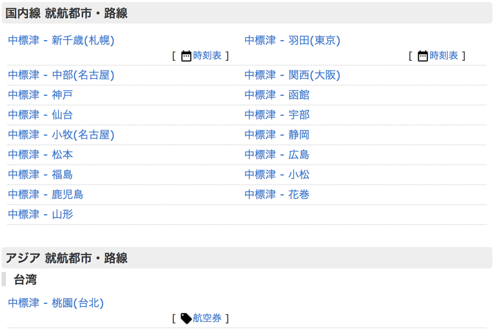
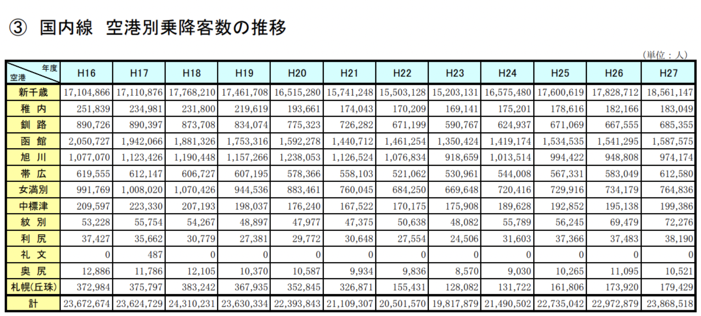

#ㅁㅊ! 4
이건 정말 역대급 ㅁㅊ이다. 이것을 딱 보고 필자는 입에서 욕이 튀어나올 정도였다.
나카시베츠에서 고마키(나고야)로 취항하는 것은 백보 천보 양보해 이해해줄 수 있다지만, 도대체 마츠모토, 후쿠시마, 야마가타, 우베, 시즈오카, 히로시마, 고마츠, 하나마키는 왜 취항하는 것일까? 게다가, 저 밑에는 나카시베츠에서 대만의 타이베이도 취항한다고 한다. (…) 말이 안 돼도 너무 안 된다.
아, 설명을 읽어보니 과거에 취항했던 노선/취항 예정이었던 노선까지 적혀있다고 한다. 놀란 가슴을 쓸어내린다.
그래, 솔직히 나카시베츠 – 하나마키나 나카시베츠 – 가고시마는 심해도 너무 심했다. (차라리 나카시베츠 – 오비히로가 더 현실성 있어 보인다.)
근데 이용객 수 자료를 찾아보니 충격적이다.
나카시베츠 연간 공항 이용자 수가 오카다마 공항보다 많다! 오카다마다 주변에 주택가라 취항 제한이 강하게 걸린다고 하던데, 사실인가보다.